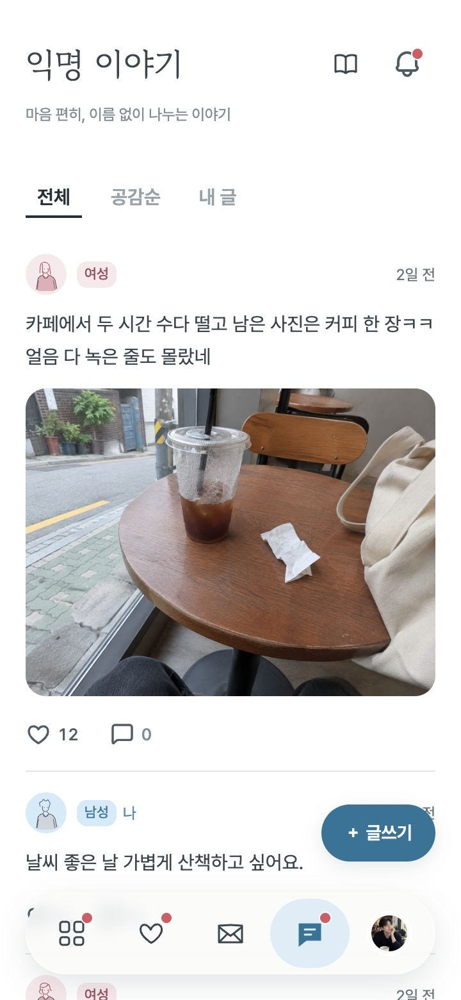
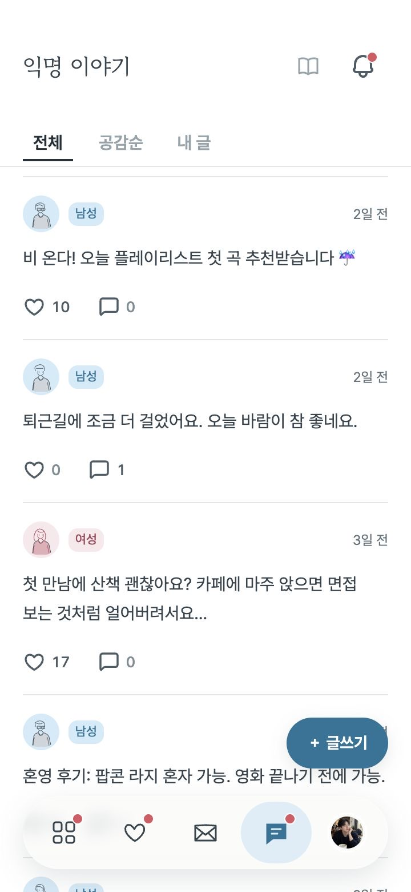
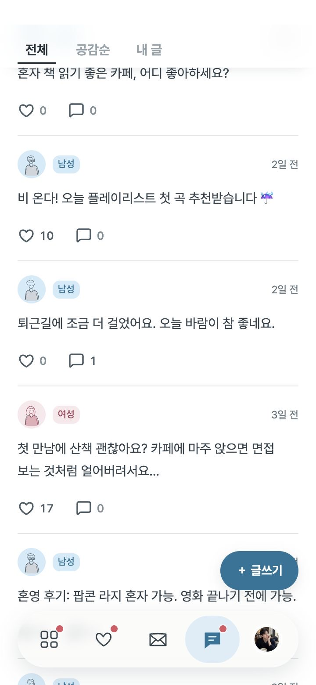

익명 이야기 · 전체 / 공감순 / 내 글 위에 고정
- 지금: 스크롤하면 탭도 같이 올라가서, 아래에서 다른 탭으로 가려면 맨 위까지 다시 올라가야 해요.
- 모든 안 공통: 스크롤 전에는 지금 그대로. 탭이 위에 닿으면 그 자리에 멈추고, 아래 글이 탭 뒤로 지나가요. 탭을 누르면 그 탭의 맨 위부터 보여요.
- 세 장 모두 같은 위치(스크롤 900)에서 찍었어요.
스크롤 전 · 뒤

스크롤 전지금과 같아요
S1탭만 고정 · 흰 바탕 탭 줄 + 아래 옅은 선 한 줄. 가장 가벼워요

S2작은 제목 + 탭 · 탭 위에 "익명 이야기"와 가이드 · 알림 아이콘이 같이 붙어요. 어느 화면인지, 알림까지 바로 닿아요

S3탭만 고정 · 흐림 · 반투명 흰 바탕 + 흐림, 선 대신 아래로 옅은 그림자. 머리 줄 흐림과 같은 결